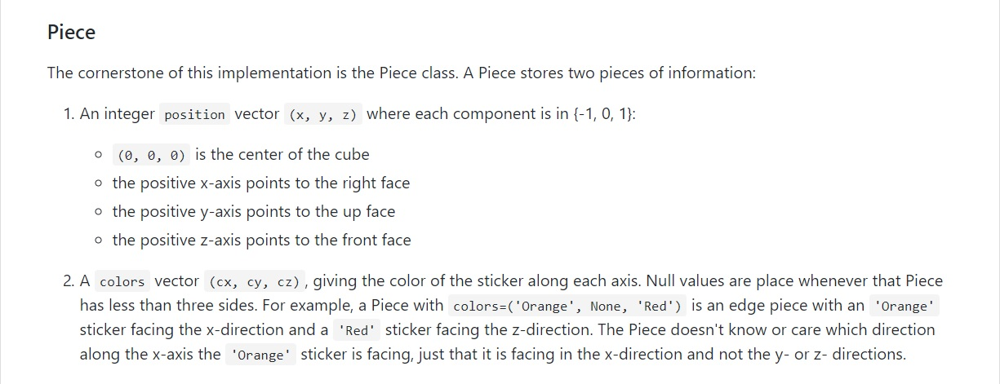
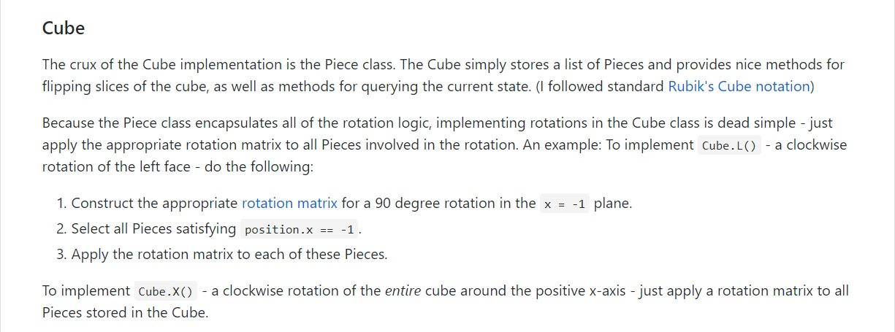
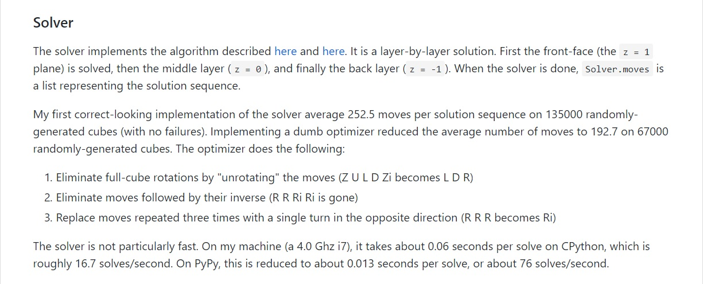
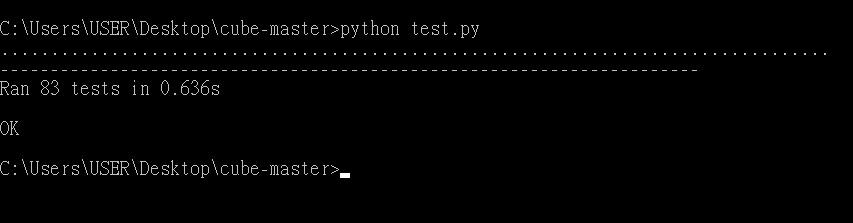

要開始做解魔術方塊機器的第一步：尋找範本。
我使用Python語言，所以我在Google上搜尋"python rubik's solver"。找到了這個網站：
Python Rubik's cube solver @ github先將程式下載下來，與此同時，看一看作者在github的說明。
從這裡可以看到，作者將每一小塊魔術方塊都賦予了位置(x, y, z)和顏色(cx, cy, cz)的屬性。
 這裡也可以看到這個程式的解法：從最前面的面，依序往後解。然後在最後也有一個Optimizer會簡化運算出來的步驟，以減少步數。
等到下載好了，就把下載下來的程式跑一次看看吧！記得要在資料夾裡面，用cmd指令執行。
看來可以順利執行。接下來就要來研究魔術方塊了。